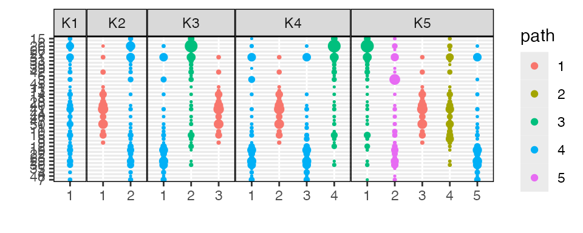
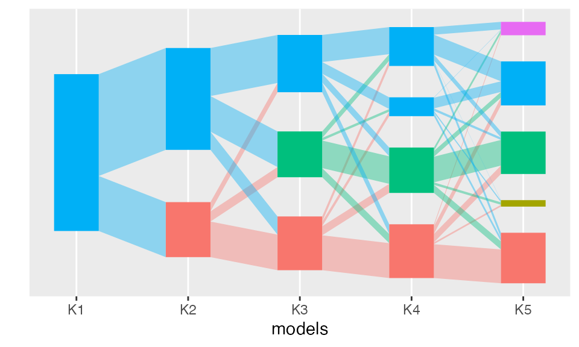

strain-switching.RmdThis vignette illustrates the use of alignment on a toy strain switching simulation. The arguments to this vignette are
K: The true number of topics underlying the simulated
data. In the manuscript, \(K =
5\).N: The number of samples (i.e., documents) to simulate.
In the manuscript, this is set to 250.S: The number of species that are subject to strain
switching. Larger \(S\) makes strain
switching easier to identify.V: The number of dimensions (i.e. vocabulary size) per
sample. In the manuscript, this is set to 1000.method: The alignment strategy to pass to
align_topics.n_models: The total number of models to fit to the
simulated data. In the manuscript, this is set to 10.out_dir: If results are saved, where should they be
saved to?save: Should any results be saved?The packages used in this simulation are given below. The strain
switching data is generated by the equivalence_data
function below. This function is sourced by the external R script linked
below.
suppressPackageStartupMessages({
library(alto)
library(tidyverse)
})
source("https://raw.githubusercontent.com/krisrs1128/topic_align/main/simulations/simulation_functions.R")We simulate the strain switching data below. The parameters for the underlying LDA model are identical to those in the other vignettes. The parameter \(\lambda_{\alpha}\) controls the sparsity of the topics simulated on the subset \(S\) of switched species.
attach(params)
lambdas <- list(beta = 0.1, gamma = 0.5, count = 1e4, alpha = 0.3)
sim_data_ <- equivalence_data(2 * N, V, K, lambdas, S) # train and test
sim_data <- sim_data_
sim_data$x <- sim_data_$x[1:N, ]
sim_data$gammas <- sim_data_$gammas[1:N, ]The block below runs a sequence of models and aligns their topics. This is identical to the parallel blocks in other simulations.
lda_params <- map(1:n_models, ~ list(k = .))
names(lda_params) <- str_c("K", 1:n_models)
alignment <- sim_data$x %>%
run_lda_models(lda_params, reset = TRUE, dir = "fits/switching_", seed = as.integer(rep)) %>%
align_topics(method = params$method)
#> Using default value 'VEM' for 'method' LDA parameter.
#> Using default value 'VEM' for 'method' LDA parameter.
#> Using default value 'VEM' for 'method' LDA parameter.
#> Using default value 'VEM' for 'method' LDA parameter.
#> Using default value 'VEM' for 'method' LDA parameter.Next, we compute the cosine similarity between the true and the estimated topics. These measurements are used to evaluate the specificity of learned topics at different resolutions. They are shown as a sequence of increasingly fine-grained heatmaps in the accompanying manuscript.
beta_hat <- alto:::plot_beta_layout(alignment)$betas
perturbed_topics <- do.call(rbind, sim_data$perturbed_topics)
similarities <- cosine_similarity(dplyr::select(beta_hat, -m), perturbed_topics) %>%
as_tibble() %>%
mutate(
m = beta_hat$m,
rep = params$rep,
S = params$S
)
#> Warning: The `x` argument of `as_tibble.matrix()` must have unique column names if
#> `.name_repair` is omitted as of tibble 2.0.0.
#> ℹ Using compatibility `.name_repair`.
#> This warning is displayed once every 8 hours.
#> Call `lifecycle::last_lifecycle_warnings()` to see where this warning was
#> generated.We can visualize the learned topics at several levels of granularity. The similarities between topics 2-4 and 3-5 in model 5 suggest that they emerge from switched versions of the same functional community.
plot_beta(alignment)
This interpretation is reinforced by the branching structure of the flow diagram. Strain switched topics tend to share a substantial fraction of their ancestor topic weight.
plot(alignment)
To ease interpretation of strain specificity across a large number of simulations, we compute a summary of the difference in cosine similarities between pairs of switched topics. This data frame is merged across simulations to provide the summary figure in the manuscript.
sensitivity <- data.frame(
diff = sum(abs(similarities[, 2] - similarities[, 1]) +
abs(similarities[, 4] - similarities[, 3])),
subset_size = params$S,
rep = params$rep
)Finally, we save both the raw experimental output and the derived summaries.
id_vars <- params[c("out_dir", "method", "S", "rep", "N", "V", "K")]
if (params$save) {
dir.create(params$out_dir, recursive = TRUE)
write_csv(similarities, save_str("similarities", id_vars))
write_csv(sensitivity, save_str("sensitivity", id_vars))
exper <- list(sim_data, alignment)
save(exper, file = save_str("exper", id_vars, "rda"))
}
#> Warning in dir.create(params$out_dir, recursive = TRUE): 'equivalence' already
#> exists
if (params$perplexity && params$save) {
x_new <- sim_data_$x[(N + 1):(2 * N), ]
perplexities <- matrix(nrow = params$n_models - 1, ncol = 2, dimnames = list(NULL, c("train", "test")))
for (k in seq(2, params$n_models)) {
load(str_c("fits/switching_K", k, ".Rdata"))
perplexities[k - 1, 1] <- topicmodels::perplexity(tm, sim_data$x)
perplexities[k - 1, 2] <- topicmodels::perplexity(tm, x_new)
}
cbind(K = seq(2, params$n_models), perplexities) %>%
as_tibble() %>%
write_csv(save_str("perplexity", id_vars))
}